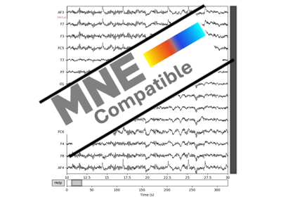

Note
Go to the end to download the full example code or to run this example in your browser via JupyterLite or Binder
EEG Data from EDF File¶
An Example of reading and working with EDF File.
To read EDF file, ‘pyedflib’ library is needed, which is not installed as requirements of spkit. To install pyedflib use ‘pip install pyedflib’
import numpy as np
import pandas as pd
import matplotlib.pyplot as plt
import os, re, time, glob, requests
import warnings
warnings.filterwarnings("ignore", category=DeprecationWarning)
import spkit as sp
print('spkit-version : ',sp.__version__)
spkit-version : 0.0.9.7
Download sample file¶
# Download file, if not already downloaded
path ='https://github.com/spkit/data_samples/raw/main/files/Resting_EPOCX_14Ch_Sample1.edf'
file_name = 'Resting_EPOCX_14Ch_Sample1.edf'
if not(os.path.exists(file_name)):
req = requests.get(path)
with open(file_name, 'wb') as f:
f.write(req.content)
Read EDF File¶
X,fs,ch_labels,info = sp.io.read_bdf(file_name)
print('X shape: ',X.shape)
print('sampling freq: ', fs)
print('==')
print('Channels')
sp.utils.pretty_print(ch_labels)
bad attr : {'nCh': 'signals_in_file', 'patient': 'patient'}
X shape: (41088, 60)
sampling freq: 128.0
==
Channels
0 TIME_STAMP_s | 1 TIME_STAMP_ms | 2 OR_TIME_STAMP_s
3 OR_TIME_STAMP_ms | 4 COUNTER | 5 INTERPOLATED
6 AF3 | 7 F7 | 8 F3
9 FC5 | 10 T7 | 11 P7
12 O1 | 13 O2 | 14 P8
15 T8 | 16 FC6 | 17 F4
18 F8 | 19 AF4 | 20 RAW_CQ
21 BATTERY | 22 BATTERY_PERCENT | 23 MarkerIndex
24 MarkerType | 25 MarkerValueInt | 26 MARKER_HARDWARE
27 CQ_AF3 | 28 CQ_F7 | 29 CQ_F3
30 CQ_FC5 | 31 CQ_T7 | 32 CQ_P7
33 CQ_O1 | 34 CQ_O2 | 35 CQ_P8
36 CQ_T8 | 37 CQ_FC6 | 38 CQ_F4
39 CQ_F8 | 40 CQ_AF4 | 41 CQ_OVERALL
42 EQ_SampleRateQua| 43 EQ_OVERALL | 44 EQ_AF3
45 EQ_F7 | 46 EQ_F3 | 47 EQ_FC5
48 EQ_T7 | 49 EQ_P7 | 50 EQ_O1
51 EQ_O2 | 52 EQ_P8 | 53 EQ_T8
54 EQ_FC6 | 55 EQ_F4 | 56 EQ_F8
57 EQ_AF4 | 58 CQ_CMS | 59 CQ_DRL
Extract EEG Data and process¶
# Extract EEG
XE = X[:,6:20]
eeg_ch_names = ch_labels[6:20]
print(eeg_ch_names)
# Filter with 0.5 Hz Highpass
Xf = sp.filter_X(XE.copy(),fs=fs,band=[0.5], btype='highpass', ftype='SOS')
# Select 20 seconds only
Xf1 = Xf[:int(20*fs)]
t = np.arange(Xf1.shape[0])/fs
# compute power
_,Pm,_ = sp.eeg.rhythmic_powers(X=Xf1.copy(),fs=fs,fBands=[[4],[8,14]],Sum=False,Mean=True,SD =False)
Pm = 20*np.log10(Pm)
['AF3', 'F7', 'F3', 'FC5', 'T7', 'P7', 'O1', 'O2', 'P8', 'T8', 'FC6', 'F4', 'F8', 'AF4']
Plot - cover¶
# this is for the cover
fig,ax = plt.subplots(1,2,figsize=(10,4),gridspec_kw={'width_ratios': [2, 1]})
sep=100
ax[0].plot(t,Xf1+np.arange(Xf1.shape[1])*sep,color='k',alpha=0.5)
ax[0].set_xlim([t[0],t[-1]])
ax[0].set_yticks(np.arange(Xf1.shape[1])*sep, eeg_ch_names)
ax[0].set_xlabel('time (s)')
ax[0].set_title('EEG Sample: 20s duration')
ax[0].text(17,sep*7,'EDF File',fontsize=130,ha='center',va='center',color='C3')
Z1,im1 = sp.eeg.topomap(data=Pm[1],ch_names=eeg_ch_names,shownames=False,axes=ax[1],return_im=True,cmap='Blues_r')
ax[1].set_title(r'$\alpha$ (8-14 Hz)')
ax[1].set_zorder(-1)
#plt.colorbar(im1, ax=ax[1],label='dB')
plt.show()
Plot¶
fig,ax = plt.subplots(1,2,figsize=(10,4),gridspec_kw={'width_ratios': [2, 1]})
sep=100
ax[0].plot(t,Xf1+np.arange(Xf1.shape[1])*sep,color='C0')
ax[0].set_xlim([t[0],t[-1]])
ax[0].set_yticks(np.arange(Xf1.shape[1])*sep, eeg_ch_names)
ax[0].set_xlabel('time (s)')
ax[0].set_title('EEG Sample: 20s duration')
Z1,im1 = sp.eeg.topomap(data=Pm[1],ch_names=eeg_ch_names,shownames=False,axes=ax[1],return_im=True)
ax[1].set_title(r'$\alpha$ (8-14 Hz)')
plt.colorbar(im1, ax=ax[1],label='dB')
plt.show()
Total running time of the script: (0 minutes 0.650 seconds)
Related examples

ATAR Algorithm with MNE RAW Object
ATAR Algorithm with MNE RAW Object


EEG Computing Rhythmic Features - PhyAAt - Semanticity
EEG Computing Rhythmic Features - PhyAAt - Semanticity